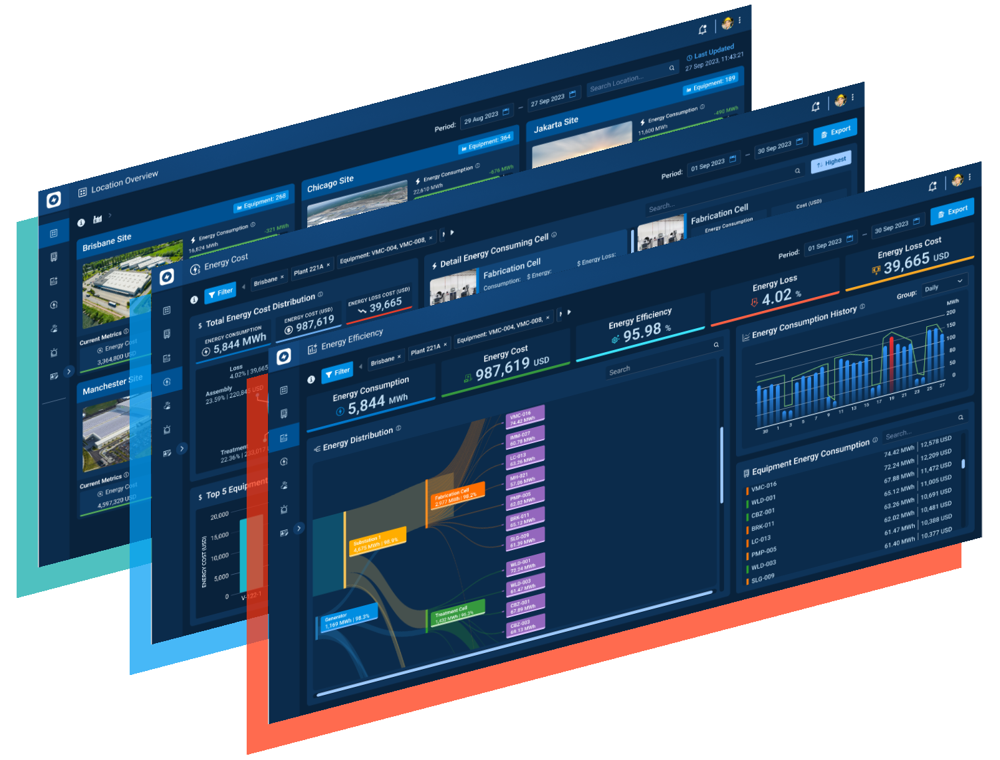
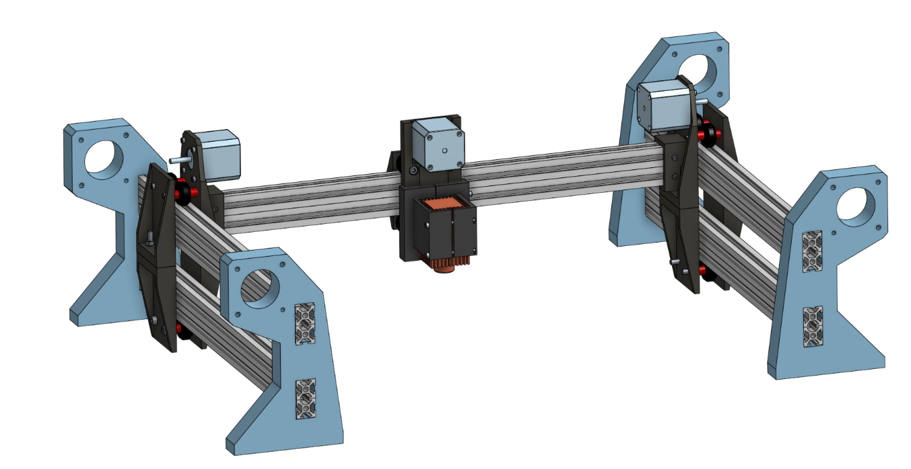
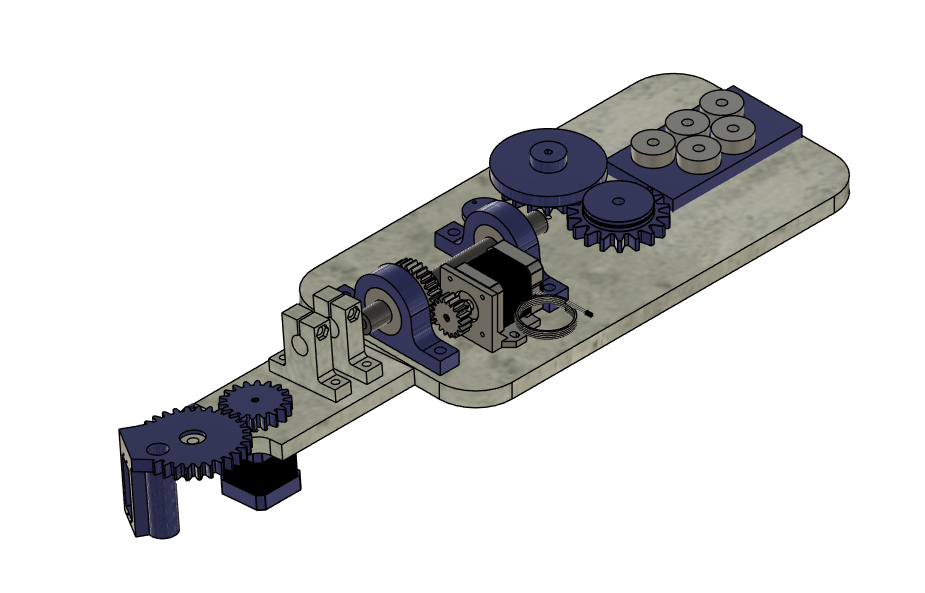
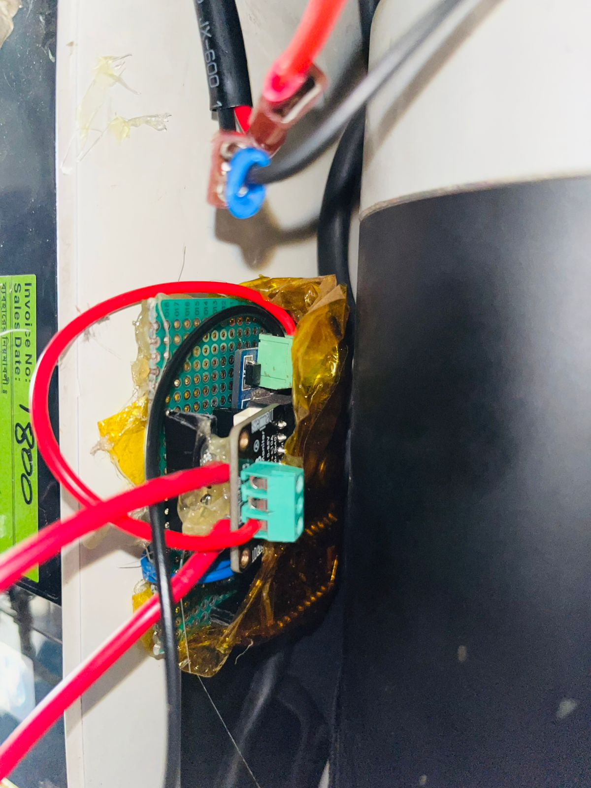

Listening to machines that were never meant to talk
Mechatronics & Industrial Engineering graduate from CUET, Implementation Lead & Hardware Designer at Southern IoT. I architect intelligent systems — from LoRaWAN industrial networks to real-time energy monitoring.
name: "Julfiker Ibn Haider",
role: "Embedded & IoT Engineer",
stack: ["ESP32", "LoRaWAN", "Modbus/RS485", "MQTT", "Home Assistant"],
mission: "Build resilient edge-to-cloud systems"
};
What I work with
I design the hardware, not just the firmware inside it
Enclosures, machine frames and mechanisms modelled in SolidWorks, from first sketch to manufacturable parts: rugged DIN-rail enclosures for industrial sites, CNC machine structures, and the mechanics of the automatic wire bending machine.

Professional experience
What I've built







Education & credentials
Continuous learning
EV Induction Motor Health Monitor
Portable network-connected device for EV motors: multi-sensor data acquisition, MQTT, InfluxDB, Grafana dashboard.
Optimized ESP32 firmware with deep sleep, OTA updates, and real-time anomaly detection. Full Grafana stack deployed on Raspberry Pi 4. Modular sensor handling.
Initial thesis prototype: basic sensor logging, local Node-RED interface, PCB design files. Foundation for the advanced monitoring architecture.
Let's build something smart
Looking for an embedded engineer to architect your next IoT product? Reach out.